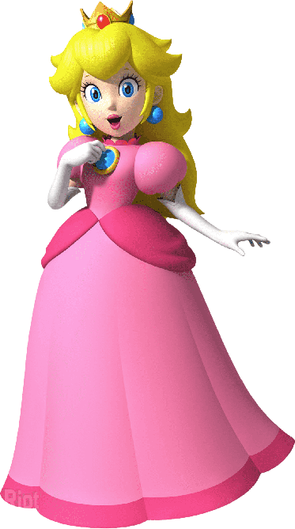

A princesa Peach é a governante do reino dos cogumelos. Ela muitas vezes já foi capturada pelo terrível Bowser, rei dos Koopas, que deseja dominar o reino dos cogumelos. Peach é rainha dos Toads, seres com cabeça de cogumelo, e seus servos, que também participam de algumas aventuras ao lado de Mario e Luigi.